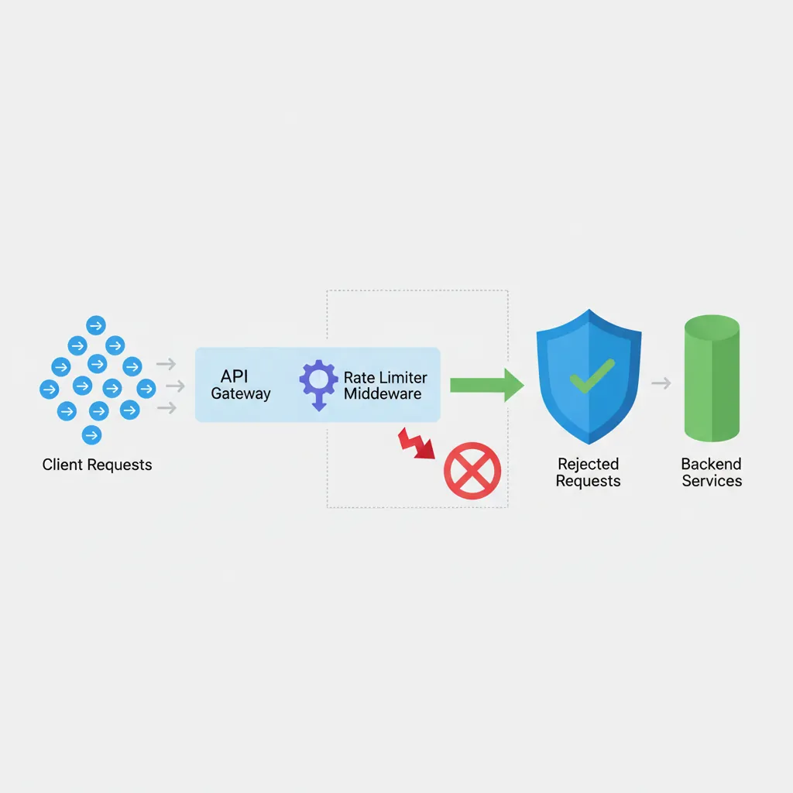

Rate Limiting
Series Navigation: This is Part 9 of the 15-part System Design Series. Review Part 8: CAP Theorem first.
System Design Mastery
Your 15-step learning path • Currently on Step 9
Introduction to System Design
Fundamentals, why it matters, key conceptsScalability Fundamentals
Horizontal vs vertical scaling, stateless designLoad Balancing & Caching
Algorithms, Redis, CDN patternsDatabase Design & Sharding
SQL vs NoSQL, replication, partitioningMicroservices Architecture
Decomposition, discovery, testing, resilienceAPI Design & REST/GraphQL
RESTful principles, GraphQL, gRPCMessage Queues & Event-Driven
Kafka, outbox, event sourcing, idempotent consumersCAP Theorem & Consistency
Distributed trade-offs, eventual consistency9
Rate Limiting & Security
Throttling algorithms, DDoS protection10
Monitoring & Observability
Logging, metrics, distributed tracing11
Real-World Case Studies
URL shortener, chat, feed, video streaming12
Data Modeling & Schema Design
Data modeling, schema design, indexing13
Distributed Systems Deep Dive
Consensus, Paxos, Raft, coordination14
Authentication & Security
OAuth, JWT, zero trust, compliance15
Questions & Trade-offs
Common questions, SQL vs NoSQL, push vs pullRate limiting controls the number of requests a client can make to your API within a given time window. It protects your services from abuse, ensures fair usage, and maintains system stability under load.

Key Insight: Rate limiting isn't just about security—it's about fairness. Without limits, one misbehaving client can degrade service for everyone.
Why Rate Limit?
- Prevent abuse: Stop malicious actors from overwhelming your system
- Ensure fairness: Give all users equal access to resources
- Control costs: Limit expensive operations and API calls
- Protect downstream: Prevent cascading failures to dependent services
- Maintain SLAs: Guarantee performance for paying customers